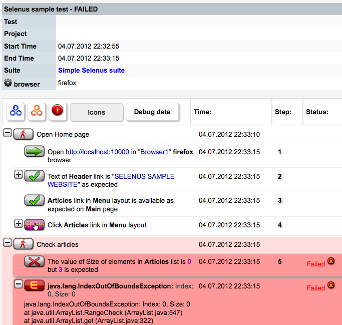

Reference Table of Contents
- Configuration
- Test Implementation
- Suite Configuration
- Events
- Data Providers
- Action Errors
- Rollbacks
- Oculus Frontend Integration
Project Configuration
For proper Oculus Experior configuration you need to put experior.properties file in the root directory of your project. Just copy it from original package and change it for your own needs.
For using as maven dependency you need to add mindengine.net maven repo to your pom.xml
<dependencies> <dependency> <groupId> net.mindengine</groupId> <artifactId> oculus-experior</artifactId> <version> 1.0.4</version> </dependency> </dependencies> <repositories> <repository> <id> mindengine.net</id> <name> mindengine.net repo</name> <url> http://mvnrepo.mindengine.net/repository</url> </repository> </repositories>
Test Implementation
A test in Oculus Experior is represented as a Java class which consists of consequent actions represented as class methods. Each test can have its input and output parameters which are represented as fields of test class marked with corresponding annotation.
This is how a basic test class look like:
import net.mindengine.oculus.experior.annotations.*;/* Using @Test annotation you can specify a better readable name for your test and also define to which project it belongs */ @Test (name="Test 1" , project="MY-TEST-PROJECT" )public class MySampleTest {/* Every input parameter must have its default value specified from the test */ @InputParameter (defaultValue="defstr" )public String paramString;/* Parameters may not be just string but also: Integer, Long, Boolean, Float, Double */ @InputParameter (defaultValue="1234" )public Long paramLong;/* You don't have to specify getters and setters for your test parameters. Experior can also handle all private and protected fields. */ @InputParameter (defaultValue="true" )private Boolean paramBoolean;/* Test actions should be defined with @Action annotation. You can define a better name for it and also specify which action should be run next. If you don't specify next action then Experior will go through all of them without any specific order */ @Action (name="Action 1" , next="action2" )public void action1(){... }/* In this case we don't set a name for action so Experior will use a method name instead */ @Action protected void action2(){... } }
To run the test you can simply use this code
import net.mindengine.oculus.experior.test.TestRunner;... TestRunner.runTest( MyTestClass.class );
Test Suite Configuration
Test suite can be defined in xml like this:
<suite name="Sample test suite" > <-- Each test has its own id so it can be used in other test in parameter dependency. Mapping in a test by default means the classpath of a test. But you can always change its behavior for your own test loader. --> <test id="test1" mapping="com.myapp.MyTest1" > <parameter name="paramInput" > some value</parameter> </test> <-- In this case test parameter depends on other test parameter. refId - is the id of the referenced test. refName - is the name of parameter of referenced test --> <test id="test2" mapping="com.myapp.MyTest2" > <parameter name="someParam" refId="test1" refName="paramOutput" /> </test> <-- Test can also have its name defined from suite. --> <test id="test3" name="Custom test name" mapping="com.myapp.MyTest3" > <-- Test may also depend on other tests. In this case if some of referenced tests failed during suite execution a dependent test will be skiped. --> <depends> <test> test1</test> </depends> </test> <-- Within a test you can also define a set of other tests. This way you can treat a test as a sub-suite --> <test id="test4" name="Many small tests" mapping="com.myapp.SubSuite" > <tests> <test id="test4_1" name="Sub-test1" mapping="com.myapp.SubTest1" > </test> <test id="test4_2" name="Sub-test2" mapping="com.myapp.SubTest2" > </test> </tests> </test> </suite>
You can run whole suite from command line like this (make sure that you embed Oculus Experior library in your jar):
java -jar mylib.jar net.mindengine.oculus.experior.test.TestLauncher suite suite.xml
Or you may want to run all suites from a specific directory in one go. Oculus Experior can search for all suites recursively and run them just by using this command:
java -jar mylib.jar net.mindengine.oculus.experior.test.TestLauncher runall ./mydir
Handling Events
For a more complex test logic you can assign listeners to various test events. Event annotations are located in net.mindengine.oculus.experior.annotations.events package. Most annotated methods are required to have some specific arguments from net.mindengine.oculus.experior.test.descriptors package. Take a look at the following list of events:| Event Annotation | Explanation |
|---|---|
| @BeforeTest | Annotated method will be run before all test actions. Important to notice that it will be invoked after all parameters and data-providers are instantiated. Method should be declared with TestInformation argument |
| @AfterTest | Annotated method will be run after all test actions. Method should be declared with TestInformation argument |
| @BeforeChildTest | Annotated method will be run before all child test. Method should be declared with TestInformation argument |
| @AfterChildTest | Annotated method will be run after all child test. Method should be declared with TestInformation argument |
| @BeforeAction | Annotated method will be invoked before every action of a test. Method should be declared with ActionInformation argument |
| @AfterAction | Annotated method will be run after every action of a test. Method should be declared with ActionInformation argument |
| @BeforeErrorHandler | Annotated method will be run before error handler of a specific action. Method should be declared with ErrorInformation argument |
| @AfterErrorHandler | Annotated method will be run after error handler of a specific action. Method should be declared with ErrorInformation argument |
| @BeforeRollback | Annotated method will be run before the rollback method of a specific action. Method should be declared with RollbackInformation argument |
| @AfterRollback | Annotated method will be run after the rollback method of a specific action. Method should be declared with RollbackInformation argument |
| @OnException(NullPointerException.class) | Annotated method will be run if a test was interrupted with a specific exception. Method should be declared with java.lang.Throwable argument |
| @OnTestFailure | Annotated method will be run in case if test failed during execution. Method should be declared with TestInformation argument. |
| @OnTestPostponed | Annotated method will be run in case if test was skiped. Method should be declared with TestInformation argument. |
public class MyTest {@Action public void action1() {... }@BeforeTest public void beforeTest(TestInformation action) {... }@BeforeAction public void beforeAction(ActionInformation action) {... }@AfterAction public void afterAction(ActionInformation action) {... } }
Using Data Providers
Data Providers allow you to implement data dependency within tests. It comes very handy when you need to move some components initialization away from the test. There are two annotations used for that:
| Annotation | Explanation |
|---|---|
| @DataProvider | Annotated method should return value and be declared with DataSourceInformation argument |
| @DataSource | This annotation can be used in many places. It can be used fields of test class and also on method arguments of all test actions and all event listeners |
There are various ways you can use data-providers.
Here is how to refer to data-providers by name.
public class MyTest {@DataSource (provider="someProvider" )private String someParameter;/* Data-source arguments can be specified in any event listeners */ @BeforeAction public void BeforeAction( ActionInformation action,@DataSource (provider="someProvider" ) String argument) {... }... @DataProvider private String someProvider() {return "Some value" ; } }
You don't even need to specify provider from data-source. Experior will find and use the first data-provider that matches the type of the data-source parameter
public class MyTest {@DataSource private MyCustomTypeA someParameter;... @DataProvider private MyCustomTypeA someProvider() {... }/* In this example this data-provider will not be used as it doesn't match the type of data-source parameter */ @DataProvider private MyCustomTypeB someProvider2() {... } }
Dependency in Data Providers
Data-providers also may help you resolve data-dependency within data-source parameters. You can use dependencies parameter in @DataSource annotation and specify dependencies between objects within data-source parameters. Experior has a dependency resolving mechanism for two data-source objects. If one has a dependency to other Experior will first initialize the referenced data-source object and then the dependent.
public class MyTest {/* In this case "field" of "componentA" will be initialized with "field" from "componentB". */ @DataSource (provider="someProviderA" , dependencies={"field<componentB.field" })public ComponentA componentA;@DataSource (provider="someProviderB" )public ComponentB componentB;/* In this example ">" symbol is used so the dependency is handled the other way around. Here the "field" of "componentC" will be initialized with "field" from "componentA". */ @DataSource (provider="someProviderC" , dependencies={"componentA.field>field" })public ComponentC componentC;@DataSource (provider="someProvider" )public String browser;/* You don't have to specify the full dependency text. In case if the field of component is the same as the referenced data-source you can just simply type its name. */ @DataSource (provider="someProviderD" , dependencies={"browser" })public ComponentD componentD;... }
Handling Action Errors
Experior gives you a nice mechanism for handling errors for specific actions. Just define an @ErrorHandler annotated method in your test and link some actions to it.
public class MyTest {@Action (onerror="errorHandler" )public void action() {... }@ErrorHandler (name="Error handler" )public void errorHandler(Throwable error) {... } }
Using Rollbacks
Rollbacks are used in case you want to go backwards through all your test actions and make some cleanups.
public class MyTest {@Action (rollback="undo1" )public void action1() {... }@Action (rollback="undo2" )public void action2() {... }@Action (rollback="undo3" )public void action3() {... }@RollbackHandler (name="Undo for action 1" )public void undo1() {... }@RollbackHandler (name="Undo for action 2" )public void undo2() {... }@RollbackHandler (name="Undo for action 3" )public void undo3() {... } }
In the example above Experior will first go through all actions and then at the end of the test it will go backwards through all "undo" methods.
Experior will only invoke rollback methods for executed action. If a test was interrupted with some error and some of its actions were skipped - then it will invoke rollbacks for those skipped actions
Integration with Oculus Frontend
Oculus Experior was developed with also easily integrates with Oculus Frontend. This feature is extremely useful when it comes to a review of test reports.
Here how it looks like on Oculus Frontend:
Testing with Frontend Integration
For easier integration with frontend there was design a class OculusTest. It has a built-in report which logs all actions, errors, rollbacks, exceptions. It also sends the test run information to Oculus Frontend so after your run the test you will be able to see results in your browser.
Here is how to use it:
import net.mindengine.oculus.experior.annotations.Action;import net.mindengine.oculus.experior.annotations.Test;import net.mindengine.oculus.experior.framework.test.OculusTest;@Test (name="Some Test" , project="MY-TEST-PROJECT" )public class MyTestextends OculusTest {@Action (name="Action 1" , next="action2" )public void action1() { report.info("Some test info inside action 1" ); }@Action (name="Action 2" , next="action3" )public void action2() {/* This is an example of structuring your test reports. You can create branches and Experior will automatically attach them to the right place. Branches can be configured in "experior.properties" */ report.branch("validation" ).title("Some validations" ); report.info("Some check was passed" ); report.error("Some check was failed" );... }@Action (name="Action 3" )public void action3() { report.error("Oh no, it's an error!" ) .details("Here I will explain more details about error" ); } }
Configure Frontend Integration
For integration with Oculus Frontend you only need to specify two properties if experior.properties file
oculus.url = http://some_oculus_frontend_host:8080 oculus.api.auth.token =
oculus.url should point to Oculus Frontend webapp and oculus.api.auth.token should be same as it is defined in config file of Oculus Frontend.